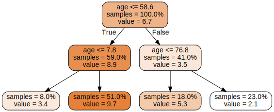
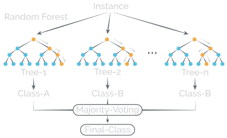

Intro to machine learning models
|
Today:
- Talk about some families of machine learning models
- Linear models
- Decision trees
- Nearest neighbor models
- Ensemble models (specifically: random forests)
- Two super simple examples with made-up datasets
Couple points before we start:
- General theme: trade-offs between simple and complex models
- Underfitting versus overfitting
- Transparency versus 'black boxes'
- The examples we'll look at are too simple for machine learning to add much value
- Today's examples: 200-500 rows of data, 2-3 columns
- (Some) Real-world datasets: millions of rows, 100-150 columns
- Or, in NLP: hundreds of thousands of distinct words
Made-up dataset #1:
Age versus running speed
Linear models
y = a + b *x
or, can add
a little more flexibility:
y = a + b *x + c *x2
etc...
Decision trees

Oops
Nearest neighors

(Image from Wikimedia Commons)
{kind=link}
Random forests

(Image by Brooke Wenig)
Made-up dataset #2:
Cats versus dogs
Linear models
A logistic regression is a linear modelfor binary classification problems:
y = 1 / (1 + exp(-(a + b *x))
Decision tree
Exactly the same as before, but nowwith two variables to split on, e.g:
weight > 100kg
fur < 3cm
Nearest neighbours
Exactly as before.
Random forests
Exactly as before.
What didn't I cover?
- Neural networks / 'deep learning'
- Way overkill for most datasets and problems
- Common exceptions: images, text
- Gradient boosting
- Same general idea as random forests; often
performs much better
- Same general idea as random forests; often